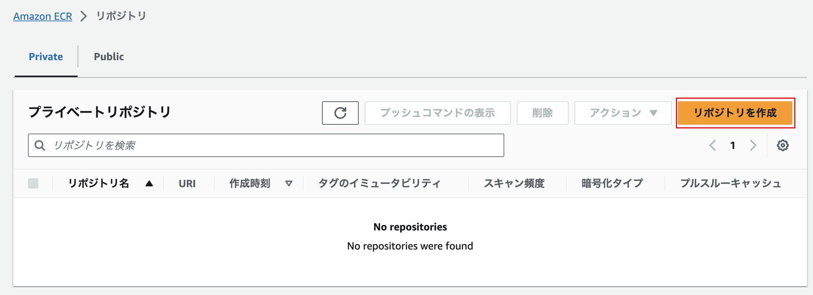

Lambdaでコンテナを動かす
コンテナイメージの作成は「Spring BootをDocker上で動かす」を参照
前提
AWS Lambdaでコンテナを実行する場合、
ECRへコンテナアップロード
AWSのコンソールからECRを開き、リポジトリを作成

リポジトリの設定は以下
可視性設定：プライベート
リポジトリ名：任意
AWSコンソールの
プッシュコマンドの表示に記されたコマンドを実行する

% aws ecr get-login-password --region ap-northeast-1 | docker login --username AWS --password-stdin XXXX.dkr.ecr.ap-northeast-1.amazonaws.com
Login Succeeded
% docker tag app-hello-spring-boot:latest XXXX.dkr.ecr.ap-northeast-1.amazonaws.com/noirepo:latest
docker tag app-hello-spring-boot:latest 891393919774.dkr.ecr.ap-northeast-1.amazonaws.com/noirepo:latest
% docker images
REPOSITORY TAG IMAGE ID CREATED SIZE
XXXX.dkr.ecr.ap-northeast-1.amazonaws.com/noirepo latest 991d27fbc07a 6 hours ago 428MB
app-hello-spring-boot latest 991d27fbc07a 6 hours ago 428MB
% docker push XXXX.dkr.ecr.ap-northeast-1.amazonaws.com/noirepo:latest
AWSコンソールを確認するとコンテナイメージが登録されていることが確認できる

API Gatewayの構築
AWSコンソールからAPI Gatewayを開き、APIを作成する
APIタイプを選択：HTTP API
統合：Lambda > コンテナイメージをデプロイしたLambda関数を指定
ルートを設定